Chapter 9: Careers, Tools & Learning¶
This final chapter turns knowledge into a career. It maps the jobs in mobile networking — RF planning, RAN, core, transport, cloud, O-RAN development, test, standards and security — and the skills each needs, shows how to read 3GPP specifications, which certifications and courses are worth your time, how to build a working 5G network on your own laptop with open-source software, and which simulators, analysers, books and blogs to use. It ends with interview questions and model answers and a twelve-month plan from zero to job-ready.
9.1 The Telecom Job Landscape in 2026¶
Mobile networks are built and run by many kinds of employer: operators who own the network and sell the service, vendors who make the equipment and software, chipmakers, test-equipment firms, cloud companies, integrators, tower companies and regulators. Jobs range from climbing towers and driving test routes to writing cloud software, analysing data and negotiating standards.
Think of it like…
It is like the airline world: airlines (operators), aircraft makers (vendors), engine makers (chipmakers), maintenance contractors (integrators) and aviation authorities (regulators) all need pilots, mechanics, designers and planners.
Real-world example
Amara, a fictional electrical-engineering graduate in Nairobi, receives three offers: a field RF optimisation job with an integrator, a network operations centre (NOC) role at a national operator, and a graduate software post at a vendor's R&D centre. She picks the operator role because it shows her the whole network end to end, planning to specialise after two years.
How it works¶
- Operators (MNOs) plan, buy, run and sell the network: planning, operations, core, transport, security and product teams.
- Vendors design, build, install and often run the network for operators under managed-services contracts.
- Chipmakers and device firms build the modems and phones; test companies build the equipment that checks everyone's work.
- Integrators, consultancies, tower companies and cloud providers fill gaps: rollout crews, design studies, sites and hosting.
- Regulators, standards bodies, universities and research labs set the rules and invent the next generation.
Who uses it
Graduates in electrical/electronic engineering, computer science or telecoms, plus career changers from IT networking, software, data and the military, enter through all of these employers.
Key takeaway
Whatever narrow role you apply for, show you understand the whole path from phone to radio to core to internet — interviewers test end-to-end thinking first.
Going deeper
- From 2023 to 2026 the big RAN vendors cut staff as 5G radio spending fell from its peak, while hiring shifted toward software, automation, cloud, AI and security skills.
- Nokia reorganised its business in 2025-2026 under CEO Justin Hotard, and in October 2025 Nvidia announced a US$1 billion investment in Nokia to develop AI-RAN products — a sign of where new roles are appearing.
- Many 'operator' jobs are actually done at vendors or integrators: under managed-services contracts a vendor's staff run an operator's network operations centre, field maintenance or optimisation.
- Engineering hubs cluster in a few cities — for example Stockholm, Espoo and Oulu, Ottawa, Plano/Dallas, San Diego, Bengaluru and Chennai, Seoul, Shenzhen — so relocation or remote work often shapes career options.
- Some roles in critical national infrastructure and government networks require security vetting or citizenship, and supply-chain rules (for example restrictions on Huawei and ZTE in several countries) shape which vendor skills are in demand locally.
- Growth areas in 2026 include private 5G for industry, fixed wireless access, non-terrestrial (satellite-to-phone) networks, network APIs, energy efficiency and early 6G research and standards work.
Common mistakes & misconceptions
- Thinking telecom work means climbing towers: field work is one entry point, but most roles are office, lab, software or data jobs.
- Believing you need a PhD: only research, algorithm and some standards roles usually need one; most engineering roles want a degree or diploma plus practical skills.
- Looking only at operators: vendors, integrators, test companies and cloud providers together employ far more radio and core engineers.
Key standards, network functions, technologies & tools¶
| Name | What it does | Example |
|---|---|---|
| Mobile network operator (MNO) e.g. Vodafone, Verizon, Reliance Jio, NTT Docomo · Organisation · Current · All |
Company that holds spectrum licences, owns or leases the network and sells mobile service; employs planning, operations, core, security and product teams. | A fictional operator, Kestrel Mobile, hires graduates into a two-year rotation across radio planning, the NOC and core engineering. |
| Network equipment vendor Ericsson, Nokia, Huawei, ZTE, Samsung Networks · Organisation · Current · All |
Designs and sells base stations, core software and management systems, and supplies engineers for rollout, support and managed services. | A vendor's R&D centre in Chennai hires software engineers to develop gNB scheduler features for a new 3GPP release. |
| Chipset and modem companies Qualcomm, MediaTek, Samsung, Apple, UNISOC · Organisation · Current · All |
Build the modems inside phones and IoT devices; hire physical-layer, protocol, firmware and test engineers. | A modem team in San Diego hires a protocol engineer to debug RRC_INACTIVE behaviour against several networks' test cells. |
| Test and measurement companies Keysight (incl. former Spirent units), Rohde & Schwarz, VIAVI, Anritsu · Organisation · Current · All |
Make network emulators, drive-test kits and analysers; employ RF, protocol, software and application engineers who support customers. | An application engineer at a test company travels to a chipmaker's lab to help set up 5G conformance test cases. |
| Systems integrators and managed-services firms Global and regional rollout and services companies · Organisation · Current · All |
Install, integrate, optimise and operate networks on behalf of operators and vendors; a common first employer for field engineers. | An integrator wins a 900-site 5G rollout contract and hires twenty commissioning and drive-test engineers for eighteen months. |
| Cloud and IT companies in telecom AWS, Microsoft Azure, Google Cloud, Red Hat, Broadcom (VMware) · Organisation · Current · All |
Supply the cloud platforms that host 5G core and RAN software; hire telecom-aware cloud architects and solution engineers. | A cloud provider's telco team needs someone who knows both Kubernetes and the AMF to help an operator move its core. |
| Tower companies and neutral hosts American Tower, Cellnex, Indus Towers, and others · Organisation · Current · All |
Own sites, indoor systems and small cells shared by several operators; hire site acquisition, DAS and RF engineers. | A neutral host designs one indoor system for a 60,000-seat stadium that three operators connect their radios to. |
| Regulators and government FCC, Ofcom, TRAI and DoT, national spectrum agencies · Organisation · Current · All |
Plan and auction spectrum, set coverage obligations and protect consumers; hire spectrum engineers, economists and policy analysts. | A spectrum engineer at a regulator models interference between a planned 3.8 GHz local-licence band and satellite earth stations. |
| Research labs and universities Nokia Bell Labs, Ericsson Research, 6G Flagship Oulu, university groups · Organisation · Current · All |
Invent and prototype next-generation techniques such as AI-native air interfaces and sensing; hire researchers, often with master's or PhD degrees. | A research engineer prototypes an integrated sensing and communication demo on software-defined radios for a 6G trial. |
| Field and site engineer Operators, vendors, integrators · Career · Current · All |
Installs and maintains radios, antennas, baseband units, power and fibre at sites; follows method statements and safety rules. | A field engineer swaps a faulty radio unit on a rooftop after a VSWR alarm, then confirms the cell is carrying traffic. |
| Network operations centre (NOC) engineer Operators, managed-services providers · Career · Current · All |
Watches alarms and KPIs around the clock, opens and resolves incident tickets, and escalates to specialist teams. | At 03:10 a NOC engineer spots twenty cells losing synchronisation, traces it to a GNSS antenna fault and dispatches a field team. |
| Graduate and apprenticeship programmes Operators, vendors, test companies, regulators · Resource · Current · All |
Structured entry schemes with rotations, training and mentoring; the most common door into the industry for students. | A vendor's graduate programme rotates new hires through integration, customer support and R&D before they choose a track. |
| Private-network and enterprise integrators Specialist integrators and vendors' enterprise units · Organisation · Current · All |
Design and run private 4G/5G networks for factories, ports, mines and campuses; need people who understand both IT and radio. | An integrator deploys a private 5G network for a container port, combining CBRS radios, a small core and the port's IT systems. |
9.2 RF, Radio Planning & Optimisation Engineers¶
Radio planning engineers decide where base stations go and how to set them up: antennas, height, direction, tilt, power and frequencies. Optimisation engineers then tune the live network using drive tests, phone measurements and statistics so users get good coverage and speed. RF means 'radio frequency' — the radio side of the network.

Think of it like…
It is like planning streetlights for a town: you choose where each lamp goes, how bright it is and where it points, then walk the streets at night to find the dark corners and adjust.
Real-world example
Priya, an RF planner at fictional NorthWave Mobile, plans 3.5 GHz (band n78) coverage for a suburb. Her planning tool predicts weak signal on a ring road, so she adds two sites. After launch, a drive test shows SS-RSRP around -112 dBm on one stretch; she reduces downtilt by 2 degrees and the next drive shows -101 dBm.
How it works¶
- Gather inputs: traffic forecasts, coverage targets, 3D maps and clutter data, available spectrum and existing sites.
- Calculate a link budget to find the maximum allowed path loss and so the rough cell range for each band.
- Run predictions in a planning tool, pick candidate sites and set antenna height, azimuth, tilt and power.
- Plan parameters: physical cell IDs, neighbour lists, PRACH settings, TDD pattern and SSB beams.
- After launch, drive and walk test, analyse statistics, and adjust tilts, powers and handover settings in a repeating loop.
Who uses it
RF planners and optimisers work for operators, vendors' network-services teams, RF consultancies, tower companies and indoor-coverage (DAS) integrators.
Key takeaway
Be able to do a free-space path loss and link budget calculation by hand and explain SS-RSRP, SS-RSRQ and SS-SINR — almost every RF interview starts there.
Going deeper
- NR has 1008 physical cell IDs (336 SSS groups × 3 PSS sequences); planners avoid neighbours sharing a PCI (collision or confusion) and try to avoid mod-3 clashes between nearby cells.
- Propagation models from 3GPP TR 38.901 (Urban Macro, Urban Micro, Rural Macro, Indoor Hotspot) are tuned with measured data; mmWave and dense urban planning increasingly use ray tracing on 3D building models.
- SS-RSRP is reported between about -156 and -31 dBm; field rules of thumb treat better than -80 dBm as excellent and worse than about -110 dBm as cell edge, but thresholds vary by operator and band.
- Free-space loss grows 20 dB per decade of frequency, so 3.5 GHz loses about 6 dB more than 1.8 GHz over the same path; massive-MIMO beamforming gain recovers much of this in the downlink.
- Optimisation levers include remote electrical tilt, azimuth, transmit power, SSB beam set-up, and handover settings such as A3 offset, hysteresis and time-to-trigger; SON functions automate neighbour and PCI management.
- Indoor planning for offices, hospitals and stadiums uses dedicated tools and DAS or small cells, because buildings with metallised glass can add 20-40 dB of penetration loss at mid-band.
Common mistakes & misconceptions
- Treating strong RSRP as good service: SINR, cell load and interference decide throughput, so a loud but interfered cell can still be slow.
- Trusting predictions blindly: an uncalibrated propagation model can be off by 10 dB or more; always validate with drive-test or crowdsourced data.
- Planning TDD cells without checking the frame pattern and synchronisation with neighbouring networks, which causes severe base-station-to-base-station interference.
Try it: Free-space path loss and a quick range comparison (Python)¶
import math
def fspl_db(d_km, f_mhz):
# free-space path loss in dB
return 20*math.log10(d_km) + 20*math.log10(f_mhz) + 32.44
for f in (700, 1800, 3500, 28000):
print(f"{f:>6} MHz at 1 km: {fspl_db(1, f):6.1f} dB")
# Each doubling of frequency adds about 6 dB of loss
Key standards, network functions, technologies & tools¶
| Name | What it does | Example |
|---|---|---|
| RF planning engineer Operators, vendors, RF consultancies · Career · Current · All |
Designs new sites and coverage using link budgets and planning tools, balancing coverage, capacity and cost. | An RF planner selects three candidate rooftops for a new n78 site and ranks them by predicted coverage and interference. |
| RF optimisation engineer Operators, vendors, integrators · Career · Current · All |
Tunes the live network using drive tests, counters and user complaints to improve coverage, quality and handovers. | An optimiser fixes dropped calls on a motorway by adding missing neighbour relations and adjusting handover offsets. |
| Drive-test engineer Integrators, operators, test companies · Career · Current · All |
Collects radio measurements with test phones and scanners along planned routes, often the first job for new RF engineers. | A drive-test engineer logs SS-RSRP, SINR and throughput on a 120 km route after a cluster of sites goes live. |
| Planner's link budget sheet Operator and vendor planning templates · Tool · Current · All |
Spreadsheet or tool module turning band, powers, antenna gains, losses and margins into maximum path loss and site spacing per service. | Priya's sheet shows the n78 uplink, not the downlink, limits cell range, so she plans sites 20% closer than the 1800 MHz grid. |
| SS-RSRP, SS-RSRQ and SS-SINR 3GPP TS 38.215 · Metric · Current · 5G |
NR measurements of signal level, signal quality and signal-to-interference-plus-noise, taken on the SSB; the planner's daily vocabulary. | A drive log showing SS-RSRP -95 dBm but SS-SINR -2 dB points to interference rather than weak coverage. |
| Physical cell ID (PCI) planning 3GPP TS 38.211 (1008 NR PCIs) · Procedure · Current · 5G |
Assigning cell identities so that neighbouring cells never clash and phones can tell them apart. | A new cell accidentally reuses a neighbour's PCI; handovers fail until the planner changes it from 213 to 487. |
| Forsk Atoll Forsk · Software · Current · All |
Widely used commercial radio planning and optimisation platform supporting 2G to 5G, propagation models and Monte Carlo simulation. | A planner imports building data into Atoll and runs an n78 coverage prediction for a whole city district. |
| Infovista Planet Infovista · Software · Current · All |
Commercial RF planning tool for multi-technology networks, including 3D and mmWave predictions and automated site selection. | An operator's planning team uses Planet to compare candidate sites for a 26 GHz fixed wireless access deployment. |
| iBwave Design iBwave · Software · Current · All |
Indoor wireless design tool for DAS, small cells and Wi-Fi, working on floor plans with wall materials. | A DAS engineer models antenna placement for a hospital's six floors and produces the bill of materials from the design. |
| Drive-test suites (TEMS, Nemo, XCAL, ROMES) Infovista, Keysight, Accuver, Rohde & Schwarz · Tool · Current · All |
Phone-based and scanner-based kits that record radio measurements and signalling during drive and walk tests. | An optimiser replays a TEMS log to see exactly which handover message failed before a call dropped. |
| 3GPP TR 38.901 channel models 3GPP RAN1 · Standard · Current · 5G |
The reference propagation and channel models (UMa, UMi, RMa, InH) used for 5G studies and as a planning starting point. | A student compares the UMa and UMi path-loss formulas at 3.5 GHz to see why street-level small cells cover less. |
| Remote electrical tilt (RET) Antenna vendors; AISG interface · Technology · Current · All |
Motor inside an antenna that changes beam downtilt remotely, so optimisers can adjust coverage without climbing the mast. | An optimiser increases tilt from 4 to 7 degrees remotely to stop a hilltop cell overshooting into a neighbouring town. |
| Crowdsourced network analytics Ookla, Opensignal and similar · Service · Current · All |
Measurements gathered from millions of users' phones, used to benchmark operators and find weak spots without driving. | An operator compares crowdsourced 5G availability maps to its own predictions to prioritise next year's new sites. |
| RF-EMF exposure compliance ICNIRP guidelines; IEC 62232; national rules · Regulation · Current · All |
Rules limiting radio-frequency exposure near antennas; planners calculate compliance zones before switching sites on. | Before activating a rooftop massive-MIMO site, the planner documents the exclusion zone in front of the antenna. |
9.3 RAN Engineers: Integration, Operations & Performance¶
RAN (radio access network) engineers bring base stations to life and keep them healthy. They load software and configuration, connect sites to the transport and core, test them, watch alarms and key performance indicators (KPIs), and fix faults. More and more of this now happens on cloud servers rather than special boxes.

Think of it like…
RAN engineers are like the technical crew of a touring concert: they set up the stage, run the sound check, keep everything working during the show and fix problems before the audience notices.
Real-world example
Tomás, a fictional integration engineer, brings a new 5G site online: he loads the gNB software, applies the configuration script, checks the NG link to the AMF and Xn to neighbours, then runs test calls. A week later accessibility drops to 97%; counters reveal PRACH failures, and a corrected PRACH root sequence restores 99.6%.
How it works¶
- Site build: hardware installed, powered, connected to fibre and GNSS or PTP timing.
- Commissioning: software load and the site configuration file applied from the management system.
- Integration: transport, NG/S1 links to the core, Xn/X2 to neighbours and synchronisation verified.
- Acceptance: test calls and KPIs checked against agreed thresholds before handover to operations.
- Operations: alarms and incidents handled through tickets in the NOC and field teams.
- Performance: KPI trends analysed and parameters changed through controlled change requests.
Who uses it
RAN integration, operations and performance engineers work at vendors, operators and integrators; Cloud RAN engineers increasingly come from Linux and cloud backgrounds.
Key takeaway
Memorise the KPI families — accessibility, retainability, mobility, integrity (throughput and latency) and availability — and be ready to name counters behind each.
Going deeper
- Base stations report performance counters in fixed reporting periods, commonly 15 minutes; 3GPP TS 28.552 defines standard 5G measurements, while each vendor adds thousands of its own counters.
- Configuration lives in vendor managed-object models with thousands of parameters per site; 3GPP TS 28.541 defines a standard 5G network resource model that vendors map to.
- Vendor element managers include Ericsson Network Manager (ENM), Nokia NetAct and MantaRay tools, and Huawei's iMaster MAE; operators often place a multi-vendor OSS and automation layer above them.
- TDD cells need phase synchronisation: neighbouring cells must align within about 3 µs, which is why loss of GNSS or PTP timing is a top-priority alarm.
- Common faults include high VSWR (damaged feeder or antenna), fronthaul link down (CPRI/eCPRI), GNSS loss, over-temperature and failed software upgrades; good engineers read alarm correlation before dispatching anyone.
- Cloud RAN products from Ericsson, Samsung, Nokia and others run DU and CU software on servers, so RAN engineers now also troubleshoot Kubernetes pods, CPU pinning and accelerator cards.
Common mistakes & misconceptions
- Changing a parameter on hundreds of cells without a pilot cluster and rollback plan; always test on a few cells and compare like-for-like periods.
- Reading a KPI dip as a fault when traffic changed (a holiday, a stadium event); normalise by traffic and check neighbouring cells.
- Ignoring neighbour relations after adding a site, which leaves users stuck on a distant cell and causes drops.
Try it: Compute two classic RAN KPIs from counters (Python)¶
# counters for one cell, one 15-minute reporting period (illustrative)
rrc_attempts, rrc_success = 12840, 12795
rel_abnormal, rel_total = 31, 11902
accessibility = 100 * rrc_success / rrc_attempts
drop_rate = 100 * rel_abnormal / rel_total
print(f"RRC setup success: {accessibility:.2f}%")
print(f"Abnormal release (drop) rate: {drop_rate:.2f}%")
Key standards, network functions, technologies & tools¶
| Name | What it does | Example |
|---|---|---|
| RAN integration engineer Vendors, integrators · Career · Current · All |
Commissions and integrates new sites, upgrades software and makes sure each base station connects correctly to transport and core. | An integration engineer brings 15 sites on air in a night window, checking NG and Xn links before releasing each one. |
| RAN performance engineer Operators, vendors · Career · Current · All |
Analyses KPIs and traces across thousands of cells to find and fix degradations, and tests new features before rollout. | A performance engineer proves a new uplink scheduler feature raises cell-edge uplink throughput by 18% on a trial cluster. |
| Cloud RAN engineer Vendors, operators running vRAN · Career · Current · 5G |
Deploys and runs virtualised CU/DU software on server clusters, combining RAN knowledge with Linux, Kubernetes and accelerator hardware. | A Cloud RAN engineer traces a DU crash to a missing hugepages setting on a newly added server. |
| Site commissioning Vendor commissioning guides · Procedure · Current · All |
Loading software, licences and the site configuration file so the base station boots into its planned settings. | The engineer applies a configuration script containing cell IDs, frequencies and transport addresses generated from the planning database. |
| Site acceptance testing Operator acceptance criteria · Procedure · Current · All |
Calls, data sessions and KPI checks that prove a new or upgraded site works before it is formally accepted. | Acceptance requires successful voice and data tests on every sector and a 24-hour KPI report above agreed thresholds. |
| Method of procedure (MOP) Operator change management · Procedure · Current · All |
Step-by-step written plan for a network change, including pre-checks, commands, verification and rollback. | A MOP for a software upgrade lists backup steps, the upgrade command, health checks and how to revert within 30 minutes. |
| Ericsson Network Manager (ENM) Ericsson · Software · Current · All |
Ericsson's network management system for configuring, monitoring and upgrading its radio and transport equipment. | An engineer uses ENM to push a parameter change to 40 cells and then collects the resulting counters. |
| Nokia NetAct and MantaRay Nokia · Software · Current · All |
Nokia's network management and self-organising network tools for configuration, monitoring and optimisation of its RAN. | An operator uses Nokia's SON tools to automatically tune neighbour relations after a new site cluster launches. |
| Performance counters and ROP files 3GPP TS 28.552 plus vendor counters · Concept · Current · All |
Statistics each cell records per reporting period, collected as files and turned into KPIs on dashboards. | A dashboard built from 15-minute ROP files shows a cell's drop rate rising every evening at the same time. |
| RAN KPI families Industry practice; 3GPP TS 28.554 KPIs · Metric · Current · All |
Accessibility, retainability, mobility, integrity and availability: the five groups operators use to judge radio performance. | A weekly report shows accessibility 99.7%, retainability 99.5% and handover success 98.9% for a city cluster. |
| VSWR and fronthaul alarms Vendor alarm catalogues · Concept · Current · All |
Typical hardware alarms: VSWR flags a damaged feeder or antenna; fronthaul alarms flag broken links between radio and baseband. | A sudden VSWR alarm after a storm points the field team straight to a water-damaged connector on sector two. |
| TDD phase synchronisation 3GPP TS 38.133; GNSS or IEEE 1588 PTP · Concept · Current · 5G |
Neighbouring TDD cells must switch between uplink and downlink at the same moment, so precise timing is critical. | When a GNSS antenna fails, the site holds over on its oscillator for hours before cells must be shut down. |
| Parameter audit (golden configuration) Operator engineering practice · Procedure · Current · All |
Comparing every cell's parameters with an approved baseline to catch drift, typos and forgotten trial settings. | A weekly audit finds 37 cells still running a test handover offset left over from a trial two months earlier. |
9.4 Core Network & Transport Engineers¶
Core network engineers design, configure and troubleshoot the 'brain' of the network — the 5G core and older 4G EPC — plus IMS for voice and the links to other operators. Transport engineers build the IP, fibre and microwave networks that carry traffic between cell sites and the core and keep everything precisely timed.

Think of it like…
If the network were a country, the core is the passport control and sorting office, deciding who may enter and where parcels go, and transport is the roads and railways that carry everything there.
Real-world example
After a core upgrade at fictional Kestrel Mobile, some customers get no data. Core engineer Wei filters a trace and sees PDU Session Establishment Reject with 5GSM cause #27, 'missing or unknown DNN'. A profile change had removed the 'internet' DNN for one subscriber group; restoring it fixes the problem within an hour.
How it works¶
- Design: dimension network functions, IP addressing, interfaces and redundancy for expected subscribers and traffic.
- Build: deploy core functions on cloud infrastructure and configure routing, DNNs, slices, policies and roaming.
- Integrate: connect to RAN, IMS, billing, the internet and roaming partners, then test call flows end to end.
- Operate: monitor signalling success rates, latency and capacity; troubleshoot with traces and logs.
- Transport: plan IP/MPLS or segment-routing backhaul, fibre and microwave links, QoS and timing distribution.
Who uses it
Core and transport engineers work for operators, core and router vendors, integrators and cloud providers; IP networking backgrounds (CCNA/CCNP style) transfer well.
Key takeaway
Know the registration and PDU session call flows message by message, and be able to read a 5GMM or 5GSM cause code from a trace.
Going deeper
- 5G core functions talk over service-based interfaces using HTTP/2 and JSON defined by OpenAPI files in the TS 29.5xx specifications, so core engineers read REST-style logs as often as classic signalling traces.
- The SMF controls the UPF over N4 using PFCP (TS 29.244), and user traffic crosses N3/N9 in GTP-U tunnels (TS 29.281); many 'no data' faults show up as PFCP session errors.
- Cause codes in TS 24.501 are the fastest clue: for example 5GMM cause #7 means 5GS services not allowed and 5GSM cause #27 means missing or unknown DNN.
- Transport networks commonly use IP/MPLS or segment routing (SR-MPLS or SRv6) with EVPN services; 5G sites usually need 10 Gbit/s or more backhaul and microwave E-band links reach multi-gigabit rates.
- Timing is distributed with IEEE 1588 PTP using the ITU-T G.8275.1 telecom profile plus Synchronous Ethernet, so transport engineers must design and monitor time error, not just bandwidth.
- Most networks in 2026 still run 4G EPC and IMS alongside the 5G core, so engineers who can trace an attach, a VoLTE call and a 5G registration are especially valuable.
Common mistakes & misconceptions
- Thinking the core is 'just servers': it is a tightly specified protocol system, and most faults are configuration or interworking issues found only by reading traces.
- Neglecting legacy: many outages involve the EPC, IMS, DNS or Diameter links rather than shiny 5G functions.
- Designing backhaul only for peak bandwidth while ignoring timing, QoS marking and redundancy, which cause harder-to-find failures.
Try it: Pull 5G core signalling out of a capture with tshark¶
# list NGAP and 5G NAS messages in a capture you made in your own lab
tshark -r lab-capture.pcap -Y "ngap || nas-5gs" | head -40
# show N4 (PFCP) and N3 (GTP-U) traffic between SMF, UPF and gNB
tshark -r lab-capture.pcap -Y "pfcp || gtp" | head -20
Key standards, network functions, technologies & tools¶
| Name | What it does | Example |
|---|---|---|
| Core network engineer Operators, core vendors, integrators · Career · Current · 5G |
Designs, configures and troubleshoots 5G core and 4G EPC functions such as AMF, SMF, UPF, MME and gateways. | A core engineer scales out the UPF before a festival weekend and checks session success rates every hour. |
| IMS and voice engineer Operators, IMS vendors · Career · Current · 4G |
Runs the IMS platform behind VoLTE, VoNR and Wi-Fi calling, including SIP routing, emergency calls and interconnect. | A voice engineer fixes one-way audio on Wi-Fi calls caused by a misconfigured media gateway firewall rule. |
| Transport and IP engineer Operators, router vendors, integrators · Career · Current · All |
Builds and runs the IP/MPLS or segment-routing network linking cell sites, data centres and the internet. | A transport engineer adds a second 10 Gbit/s path to an aggregation ring so 5G sites survive a fibre cut. |
| Microwave and fibre transmission engineer Operators, microwave vendors, fibre contractors · Career · Current · All |
Plans radio-link and fibre backhaul, including path profiles, rain fade margins and optical budgets. | An engineer plans an E-band microwave hop of 2 km to connect a rooftop site where fibre is too expensive. |
| Roaming and interconnect engineer Operators, IPX providers · Career · Current · All |
Manages links to other operators for roaming, SMS and voice, including SEPP, Diameter and SS7 signalling. | A roaming engineer tests 5G SA roaming with a partner network through their SEPPs before a summer launch. |
| Call-flow analysis 3GPP TS 23.502 and TS 24.501 · Procedure · Current · All |
Reading signalling traces step by step to see where a procedure deviates from the standard flow. | Comparing a failed registration with a good one reveals the AUSF timing out during authentication. |
| 5GMM and 5GSM cause codes 3GPP TS 24.501 · Concept · Current · 5G |
Numbered reasons carried in NAS reject messages that tell engineers why registration or a PDU session failed. | Cause #27 in a 5GSM reject sends the engineer straight to the subscriber's DNN configuration. |
| PFCP on N4 3GPP TS 29.244 · Protocol · Current · 5G |
Protocol the SMF uses to install rules in the UPF telling it how to detect, forward, measure and police packets. | A trace shows PFCP Session Establishment Response with cause 'rule creation/modification failure', explaining missing user traffic. |
| SBI troubleshooting with HTTP/2 logs 3GPP TS 29.500 and TS 29.5xx OpenAPI · Protocol · Current · 5G |
Reading HTTP/2 requests, responses and problem details between core functions to find failing service calls. | An engineer spots HTTP 404 'USER_NOT_FOUND' from the UDM, revealing a missing subscriber record. |
| IP/MPLS and segment routing IETF RFC 3031; RFC 8402 (segment routing) · Technology · Current · All |
Label-based forwarding used in operator backbones; segment routing simplifies traffic engineering with source-defined paths. | An operator migrates its mobile backhaul from LDP-based MPLS to SR-MPLS to steer 5G traffic around congested links. |
| PTP and SyncE timing IEEE 1588; ITU-T G.8275.1, G.8262 · Protocol · Current · All |
Precision Time Protocol plus Synchronous Ethernet distribute frequency and time over the transport network. | A transport engineer measures time error at a cell-site router to confirm it stays well inside the TDD budget. |
| Service-provider routers Cisco, Juniper (HPE), Nokia, Huawei, Ericsson · Equipment · Current · All |
Cell-site, aggregation and core routers that carry mobile traffic with QoS, VPNs and timing support. | A cell-site router tags voice traffic with a higher DSCP class so VoNR stays clear during congestion. |
| DNS and Diameter in the mobile core IETF DNS; Diameter (RFC 6733) for 4G · Protocol · Current · 4G |
Supporting protocols whose faults often take down service: DNS for core function discovery and Diameter for 4G policy, charging and roaming. | An expired DNS record stops MMEs finding a gateway, blocking new 4G data sessions in one region. |
9.5 Telecom Cloud, DevOps & O-RAN/RIC Developers¶
Modern mobile networks are increasingly software running in containers on ordinary servers, managed by Kubernetes. Telecom cloud and DevOps engineers build the platforms and automation that deploy, upgrade and test this software; developers write applications such as RIC xApps and rApps that tune the radio network, plus automation and network-API code.

Think of it like…
It is the move from hand-building every car in a workshop to running an app store on standard phones: the hardware is common, and the value is in software that can be updated quickly and safely.
Real-world example
Jonas, a fictional DevOps engineer at a European operator, builds a GitOps pipeline: a change to a UPF Helm chart triggers tests against UERANSIM simulated phones, then Argo CD rolls it to one edge site before the rest. His colleague Mei writes an xApp that reads per-cell load through E2 and steers users between carriers.
How it works¶
- Code and configuration live in Git; every change is reviewed like software.
- CI pipelines build container images and run unit, interface and simulated-traffic tests.
- CD tools deploy to Kubernetes clusters at central and edge data centres, usually one site first (canary).
- Observability stacks collect metrics, logs and traces from network functions and infrastructure.
- RIC applications and automation close the loop, adjusting the network from live data within policy limits.
Who uses it
Telecom cloud, platform, DevOps/SRE and network-automation engineers work at operators, vendors and cloud providers; O-RAN and RIC developers work at vendors, start-ups, operators' labs and universities.
Key takeaway
Be ready to explain why telecom containers need Multus, SR-IOV, DPDK, CPU pinning and hugepages when ordinary web apps do not.
Going deeper
- Multus gives a pod several network interfaces so signalling, user plane and management traffic stay separate; SR-IOV hands a pod a virtual function of the physical NIC, and DPDK processes packets in user space for line-rate throughput.
- Distributed Units have tight real-time deadlines, so DU servers use real-time kernels, isolated and pinned CPU cores, hugepages, precise PTP timing and often FEC or GPU accelerators.
- Nephio, a Linux Foundation project started in 2022 with Google, applies Kubernetes-style intent and GitOps to deploying and configuring network functions across many sites.
- The O-RAN Software Community, run by the O-RAN Alliance with the Linux Foundation, publishes a Near-RT RIC platform; xApps subscribe to E2 service models such as E2SM-KPM for metrics and E2SM-RC for control.
- Lightweight research RICs such as FlexRIC from EURECOM work with OpenAirInterface and other open stacks, letting students write and test xApps on a laptop.
- Observability usually means Prometheus metrics, Grafana dashboards, OpenTelemetry traces and centralised logs; telecom adds 3GPP performance counters and fault alarms on top.
Common mistakes & misconceptions
- Treating network functions like web apps: without SR-IOV, DPDK and CPU isolation a UPF or DU may lose packets or miss real-time deadlines.
- Learning Kubernetes but not telecom: automation code that does not understand AMF, SMF or cell parameters can automate mistakes at scale.
- Calling a virtual machine lift-and-shift 'cloud-native': true CNFs scale, heal and upgrade independently in small services.
Try it: Spin up a throwaway Kubernetes cluster on your laptop¶
# needs Docker plus the 'kind' and 'kubectl' tools
kind create cluster --name telco-lab
kubectl get nodes -o wide
kubectl get pods -A # system pods that make Kubernetes run
kind delete cluster --name telco-lab
Key standards, network functions, technologies & tools¶
| Name | What it does | Example |
|---|---|---|
| Telecom cloud engineer Operators, vendors, cloud providers · Career · Current · 5G |
Builds and runs the Kubernetes and server platforms that host core and RAN network functions in data centres and at the edge. | A telecom cloud engineer adds an edge cluster to a stadium site so a local UPF can serve event traffic. |
| Network automation and DevOps engineer Operators, vendors · Career · Current · All |
Writes pipelines, scripts and tools that deploy, test, upgrade and configure the network automatically and repeatably. | An automation engineer replaces a 40-step manual MOP with an Ansible playbook that runs pre-checks and rollback automatically. |
| O-RAN and RIC developer Vendors, start-ups, research labs · Career · Current · 5G |
Develops xApps and rApps that monitor and control the RAN through standard O-RAN interfaces. | A RIC developer writes an energy-saving rApp that switches off a capacity carrier at night when load is low. |
| Kubernetes for network functions CNCF / Linux Foundation · Software · Current · 5G |
Container orchestration platform that schedules, scales and heals cloud-native network functions across server clusters. | A 5G core deployed as Kubernetes pods automatically restarts an AMF instance that crashed, keeping registrations flowing. |
| Helm and GitOps (Argo CD, Flux) CNCF projects · Tool · Current · All |
Helm packages network functions as charts; GitOps tools keep clusters matching what is declared in a Git repository. | Merging a pull request that bumps the SMF chart version causes Argo CD to roll the upgrade to the test cluster. |
| Multus CNI and SR-IOV Kubernetes networking plugins · Technology · Current · 5G |
Give telecom pods multiple network interfaces and near-hardware NIC performance for signalling and user-plane traffic. | A UPF pod gets one Multus interface for N3 GTP-U traffic and another for N6 internet traffic, both SR-IOV backed. |
| DPDK Linux Foundation (Data Plane Development Kit) · Software · Current · All |
Libraries for fast user-space packet processing that bypass the kernel network stack, used by UPFs and DUs. | Moving a lab UPF from the kernel datapath to a DPDK-based one raises throughput from a few to tens of gigabits per second. |
| Telco cloud platforms Red Hat OpenShift, Wind River, public-cloud telco offers · Software · Current · All |
Commercial Kubernetes distributions tuned for telecom, with real-time, networking and lifecycle features operators need. | An operator standardises on one telco cloud platform so core and vRAN vendors deploy onto the same infrastructure. |
| Nephio Linux Foundation · Software · Emerging · 5G |
Open-source project using Kubernetes intent and GitOps to automate deployment and configuration of network functions at scale. | A lab uses Nephio to declare 'one UPF per edge site' and lets controllers create and configure them. |
| O-RAN SC Near-RT RIC O-RAN Software Community (O-RAN Alliance + Linux Foundation) · Software · Current · 5G |
Open-source reference Near-RT RIC platform where developers deploy and test xApps against E2 nodes. | A student deploys the OSC RIC in a Kubernetes cluster and runs a sample KPI-monitoring xApp. |
| E2SM-KPM and E2SM-RC O-RAN Alliance WG3 · Standard · Current · 5G |
E2 service models a developer codes against: KPM reports performance metrics, RC lets an xApp control radio behaviour. | An xApp subscribes to E2SM-KPM to receive per-cell PRB usage each second, then uses E2SM-RC to trigger handovers. |
| Prometheus and Grafana CNCF Prometheus; Grafana Labs · Tool · Current · All |
Open-source metrics collection and dashboarding widely used to monitor cloud-native network functions and lab networks. | A lab Grafana dashboard shows registered UEs, PDU sessions and UPF throughput from an Open5GS exporter. |
| Network API developer Operators, aggregators, CAMARA community · Career · Emerging · 5G |
Builds applications and platforms that expose network capabilities, such as location or quality-on-demand, to outside developers. | A developer integrates a SIM-swap check API into a bank's login flow to block fraud on recently swapped numbers. |
9.6 Protocol & Test, Standards and Telecom Security Roles¶
Three specialist paths need deep protocol knowledge. Protocol and test engineers prove that phones and network equipment behave exactly as the standards say. Standards delegates represent their company in 3GPP and other bodies, writing and negotiating the specifications. Telecom security specialists protect networks and subscribers from fraud, spying and attacks.
Three specialist paths
| Protocol & test | Standards delegate | Telecom security | |
|---|---|---|---|
| Daily work | Run test cases, analyse logs | Write Tdocs, negotiate CRs | Monitor, assess, test, respond |
| Key specs | TS 38.523, 38.521 | Own WG's specs, TS 21.900 | TS 33.501, SCAS, NESAS |
| Tools | Emulators, test UEs, analysers | 3GPP portal, Tdoc server | Signalling firewalls, fuzzers |
| Typical entry | Graduate role | After 5+ years in R&D | IT security or core background |
| Employers | Chipmakers, test firms | Vendors, operators, labs | Operators, vendors, agencies |
All three reward people who enjoy reading specifications closely.
Think of it like…
The test engineer is the crash-test lab, the standards delegate is the diplomat drafting a treaty, and the security specialist is the bank's fraud team and locksmith combined.
Real-world example
Hana, a fictional test engineer at a chipmaker, runs protocol conformance cases from TS 38.523 against a new modem on a network emulator. Kofi, a vendor's delegate, presents a Tdoc at a RAN2 meeting and negotiates a change request. Sofia, a security analyst at an operator, spots location-tracking attempts in SS7 traffic and tightens the signalling firewall.
How it works¶
- Test: write test plans from the spec, run them on emulators and live networks, log failures and verify fixes.
- Certify: devices pass GCF or PTCRB conformance and operator acceptance before they can launch.
- Standardise: study the problem, write contributions (Tdocs), agree change requests in working groups and get TSG approval.
- Secure: assess equipment against SCAS/NESAS, monitor signalling interfaces, test the core's APIs and respond to incidents.
Who uses it
Chipset, device, vendor and test-equipment companies hire most test engineers; standards delegates come from vendors, operators and research labs; security specialists work at operators, vendors, security firms and agencies.
Key takeaway
In all three roles, quote the exact spec, release and version you are talking about — 'TS 38.331 V18.x' — because behaviour changes between releases.
Going deeper
- UE conformance tests are specified in TS 38.521 (RF), TS 38.523 (protocol) and TS 38.533 (radio resource management); certification schemes GCF and PTCRB decide which cases a device must pass.
- Network emulators such as Keysight's UXM, Rohde & Schwarz's CMX500 and Anritsu's MT8000A act as a complete network for one phone, while test UEs such as VIAVI's TM500 load a base station with hundreds of simulated phones.
- 3GPP working groups meet several times a year; companies submit Tdocs, agreed changes become CRs, and TSG plenaries approve them quarterly; TS 21.900 describes the working methods.
- Standard-essential patents (SEPs) declared under ETSI's IPR policy must be licensed on FRAND terms, so standards work links closely to licensing and patent teams.
- Telecom security work includes SS7, Diameter and GTP signalling firewalls (GSMA FS.11 covers SS7 monitoring), NESAS audits and SCAS testing, SIM and eSIM security, and penetration testing of 5G core APIs.
- Open-source labs such as Open5GS with UERANSIM let security students practise fuzzing NAS and NGAP messages safely, isolated from any real network.
Common mistakes & misconceptions
- Expecting to start as a standards delegate: most delegates first spend years in R&D so they understand implementation trade-offs.
- Testing against the wrong release: a device built for Release 17 may correctly reject a Release 18 feature, which is not a bug.
- Applying IT security knowledge without learning telecom protocols — SS7, Diameter, GTP and NAS attacks look nothing like web attacks.
Try it: See which mobile-network dissectors your Wireshark knows¶
tshark -G protocols | grep -i -E "nas-5gs|ngap|f1ap|e1ap|xnap|pfcp|gtpv2|s1ap|diameter"
Key standards, network functions, technologies & tools¶
| Name | What it does | Example |
|---|---|---|
| Protocol test engineer Chipmakers, device makers, vendors · Career · Current · 5G |
Designs and runs protocol test cases, analyses signalling logs and reports deviations from the specifications. | A test engineer finds a modem ignores a measurement configuration in RRCReconfiguration and files a bug with the log attached. |
| Test automation engineer Vendors, test companies · Career · Current · All |
Writes frameworks and scripts that run thousands of regression tests on every software build without human clicks. | Nightly Python-driven tests run 2,000 registration and handover cases on a lab gNB and email a pass-rate report. |
| 3GPP TS 38.523 3GPP RAN5 · Standard · Current · 5G |
Specification of 5G NR UE protocol conformance tests covering layer 2, RRC and NAS behaviour. | A test case from TS 38.523 checks that a phone correctly resumes from RRC_INACTIVE after paging. |
| Network emulators Keysight UXM, Rohde & Schwarz CMX500, Anritsu MT8000A · Equipment · Current · 5G |
Lab instruments that imitate a complete mobile network so a single device can be tested under controlled conditions. | Engineers simulate a weak cell at -120 dBm on an emulator to test a phone's reselection behaviour repeatably. |
| Test UEs and load testers VIAVI TM500 and similar · Equipment · Current · 5G |
Equipment simulating many phones at once to stress base stations and cores with realistic traffic and mobility. | A vendor loads a new DU with 1,000 simulated UEs to confirm the scheduler holds up at peak load. |
| Standards delegate Vendors, operators, research labs · Career · Current · All |
Represents a company in 3GPP, O-RAN or ITU meetings, writing contributions and negotiating technical agreements. | A RAN1 delegate argues, with simulation results, for a particular reference-signal design in a 6G study item. |
| Tdocs and change requests (CRs) 3GPP working procedures, TS 21.900 · Procedure · Current · All |
Tdocs are meeting contributions; CRs are formal edits to a frozen specification that must be agreed and approved. | A CR fixing an ASN.1 error in TS 38.331 is agreed in RAN2, then approved at the next RAN plenary. |
| Patent and licensing engineer Vendors, chipmakers, patent pools, law firms · Career · Current · All |
Analyses which patents a standard needs, maps them to products and supports licensing negotiations; combines spec reading with IP law. | A licensing engineer charts how a declared patent's claims map onto a clause of TS 38.213 for a negotiation. |
| Telecom security engineer Operators, vendors, security firms · Career · Current · All |
Protects the network and subscribers: signalling security, core and RAN hardening, SIM security, monitoring and incident response. | A security engineer blocks SS7 messages asking for subscriber location from an unknown foreign network address. |
| Telecom penetration tester Security consultancies, operators' red teams · Career · Current · All |
Authorised tester who attacks core APIs, RAN interfaces, SIM provisioning and management systems to find weaknesses first. | During an authorised test, a pentester finds a core management portal exposed to the operator's corporate network without MFA. |
| GSMA NESAS as a career skill GSMA with 3GPP SCAS (TS 33.5xx) · Standard · Current · 5G |
Security assurance scheme auditing vendor development processes and testing network products; auditors and test-lab engineers are in demand. | A security test-lab engineer runs SCAS test cases from TS 33.512 against a vendor's AMF for NESAS evaluation. |
9.7 The Skills Map: What to Learn and Why¶
Every mobile-network job rests on a small set of foundations: decibel maths and radio basics, IP networking, Linux, a programming language (usually Python), how containers and cloud work, call flows and the habit of reading specifications. On top of these you build deep skills for one domain, such as radio, core, cloud or security.
Think of it like…
It is like learning to cook: knife skills and heat control (foundations) come first, then recipes (protocols), kitchen equipment (tools), and finally reading the great cookbooks yourself (specifications).
Real-world example
Daniel, a fictional IT help-desk technician, maps his skills: strong on Windows and Wi-Fi, weak on Linux, Python and radio. Over nine months he learns Linux and Python, builds an Open5GS lab, studies 5G call flows and earns a networking certificate, then lands a junior core-operations role.
How it works¶
- Foundations: dB maths, frequency and bandwidth, IP networking, Linux command line.
- Tools: Python for analysis and automation, Git, Wireshark, basic SQL and spreadsheets.
- Mobile knowledge: architecture, call flows, RAN and core concepts across 4G and 5G.
- Platform: containers, Kubernetes and cloud basics, since most new network functions run there.
- Specialise: pick radio, core, transport, cloud, test or security and go deep, including its specs and vendor tools.
Who uses it
Everyone entering the field — students, career changers and engineers moving between domains — uses a skills map to plan learning and to describe themselves on a CV.
Key takeaway
Aim to be T-shaped: broad enough to follow an end-to-end call flow, deep enough in one area to solve problems on your own.
Going deeper
- Decibel fluency matters: +3 dB doubles power and +10 dB multiplies it by ten; 0 dBm is 1 mW, 30 dBm is 1 W and a 46 dBm macro transmitter puts out about 40 W.
- Networking basics that come up constantly: IPv4 and IPv6 addressing, TCP versus UDP, SCTP (which carries NGAP, S1AP and Diameter in many deployments), DNS, VLANs, routing and MPLS.
- Linux skills include the shell, systemd, iproute2 (ip addr, ip route), tcpdump, network namespaces and performance tools, because almost every lab and many products run on Linux.
- Python is the default language for KPI analysis (pandas, Jupyter), automation (Ansible, Netmiko, REST clients) and decoding (pycrate for ASN.1 and NAS); C, C++ and Go dominate network-function code.
- ASN.1 with PER encoding defines RRC, NGAP, F1AP and XnAP messages; recognising ASN.1 structures makes TS 38.331 and Wireshark decodes far easier to read.
- Data and AI literacy — basic statistics, anomaly detection and machine-learning concepts — is increasingly expected as operators adopt AIOps and AI-RAN features.
Common mistakes & misconceptions
- Collecting certificates without building anything: employers trust a working lab and a trace you can explain more than a badge.
- Skipping dB maths and RF basics because they feel old-fashioned; radio interviews still start with link budgets and SINR.
- Trying to memorise whole specifications; learn where to look and what the key procedures do instead.
Try it: Print the 5G NR numerology table (Python)¶
for mu in range(0, 7):
scs_khz = 15 * 2**mu
slots_per_ms = 2**mu
slot_us = 1000 / slots_per_ms
print(f"mu={mu}: SCS {scs_khz:>3} kHz, {slots_per_ms:>2} slots/ms, slot {slot_us:7.2f} us")
Key standards, network functions, technologies & tools¶
| Name | What it does | Example |
|---|---|---|
| Decibel maths Engineering fundamentals · Concept · Current · All |
Logarithmic way of expressing power ratios and levels (dB, dBm, dBi) used in every link budget and measurement. | Adding a 17 dBi antenna to a 43 dBm transmitter with 3 dB cable loss gives 57 dBm EIRP. |
| RF and signal fundamentals Engineering fundamentals · Concept · Current · All |
Frequency, wavelength, bandwidth, modulation, noise, interference and fading — the language of radio engineering. | Knowing that 3.5 GHz has an 8.6 cm wavelength explains why massive-MIMO panels can fit 64 antenna elements. |
| IP networking with SCTP IETF (IPv4, IPv6, TCP, UDP, SCTP RFC 9260) · Protocol · Current · All |
The internet protocols that carry all mobile signalling and traffic, including SCTP used for many RAN-core links. | A gNB fails to connect to the AMF because a firewall blocks SCTP port 38412 used by NGAP. |
| Linux command line Linux distributions (e.g. Ubuntu, RHEL) · Software · Current · All |
Shell, services, networking and logging skills needed to install labs and operate network functions. | Using 'ip addr', 'journalctl -u open5gs-amfd' and 'tcpdump -i any sctp' a student fixes a lab registration failure. |
| Python for telecom Python Software Foundation and community libraries · Software · Current · All |
Most common language for KPI analysis, automation, test scripts and protocol decoding in mobile networks. | A 60-line Python script merges drive-test exports and flags every road segment with SS-SINR below 0 dB. |
| pandas and Jupyter Open-source Python data tools · Tool · Current · All |
Data frames and notebooks for cleaning, analysing and charting large counter and drive-test datasets. | An optimiser loads a month of cell counters into pandas and finds the ten worst cells by drop rate. |
| Containers and Kubernetes skills CNCF ecosystem · Concept · Current · 5G |
Understanding images, pods, services, Helm charts and networking plugins, since new network functions are cloud-native. | Reading a pod's logs with kubectl reveals an SMF failing to reach the NRF because of a wrong service name. |
| Call flows 3GPP TS 23.401 (4G), TS 23.502 (5G) · Procedure · Current · All |
The sequences of messages for attach, registration, sessions, handover and paging that tie the whole network together. | Sketching the 5G registration flow from memory is a common first interview task for core and RAN roles. |
| ASN.1 and PER encoding ITU-T X.680 and X.691 · Standard · Current · All |
Notation and compact binary encoding used to define RRC and many RAN/core application protocols. | A student matches the RRCSetupRequest ASN.1 in TS 38.331 to the fields Wireshark decodes from a lab trace. |
| pycrate Open-source (P1 Security origin) · Software · Current · All |
Python library that encodes and decodes mobile protocols, including ASN.1 RRC/NGAP and NAS messages. | A researcher uses pycrate to decode a hex NAS Registration Request copied from a log file. |
| Git and version control Git (open source); GitHub, GitLab · Tool · Current · All |
Tracks changes to code and configuration, the basis of collaboration, GitOps and a public learning portfolio. | A student publishes lab configs and notes on GitHub, which an interviewer later asks about. |
| Data and AI literacy Statistics and machine-learning basics · Concept · Emerging · All |
Ability to reason about distributions, trends, anomalies and simple models used in AIOps and AI-RAN features. | An engineer explains why an anomaly model flagged a cell: its evening traffic was four standard deviations above normal. |
| Professional and communication skills Workplace skills · Concept · Current · All |
Writing clear MOPs and incident reports, explaining problems to non-specialists and working across time zones. | After an outage, a clear one-page incident summary with timeline and root cause earns trust from management. |
9.8 How to Read 3GPP Specifications¶
3GPP specifications are the free rulebooks that every 4G, 5G and future 6G product follows. A TS (Technical Specification) is the binding rule; a TR (Technical Report) is a study or background document. Each has a number like 38.331 — the first two digits say the subject area — and a version like 18.6.0, whose first number is the release.

Think of it like…
They work like a country's legal code: statute books grouped by subject (the series), amended clause by clause (change requests), and republished as new editions (releases).
Real-world example
Lucia, a fictional student, wants to understand RRC connection setup. She first reads the overview in TS 38.300, then downloads the latest Release 18 TS 38.331 from the 3GPP archive, searches for RRCSetupRequest, reads the procedure text and the ASN.1, and finally matches every field to a Wireshark trace from her lab.
How it works¶
- Start with an overview spec: TS 38.300 for the NR radio, TS 23.501 for the 5G system, TS 36.300 for LTE.
- Find the detailed stage 3 spec for your topic and download it from the 3GPP archive or ETSI's copy.
- Check the version: pick the release your network or device implements, not simply the newest.
- Read clause 3 (abbreviations), then the procedure text, then message definitions and ASN.1.
- Cross-check with a real trace and note which fields are optional or release-dependent.
Who uses it
Protocol, test, RAN, core and security engineers, standards delegates and students read 3GPP specs; interviewers love candidates who can say which spec defines what.
Key takeaway
Decode file names: 38331-i60.zip is TS 38.331 V18.6.0, because each version digit is written in base 36 (a = 10 … i = 18, j = 19).
Going deeper
- 3GPP splits work into stages: stage 1 service requirements (22 series), stage 2 architecture (23 series and overview specs such as TS 38.300) and stage 3 detailed protocols (24, 29 and most 38.3xx/38.4xx specs).
- Key series: 21 vocabulary and working methods, 22 requirements, 23 architecture, 24 UE-network signalling, 26 codecs, 28 and 32 management and charging, 29 core protocols, 31 SIM, 33 security, 36 LTE radio, 37 multi-RAT, 38 NR radio.
- A draft is v0.x/1.0.0 until its TSG approves it (v2.0.0); it then becomes, for example, 18.0.0. The middle number rises with technical changes and the last with editorial fixes.
- Archives live at www.3gpp.org/ftp/Specs/archive/<series>_series/<spec>/; ETSI republishes the same text free as ETSI TS 1xx xxx (TS 38.331 becomes ETSI TS 138 331).
- 3GPP's seven organisational partners are ARIB, ATIS, CCSA, ETSI, TSDSI, TTA and TTC; they transpose specs into regional standards.
- For 6G, TR 22.870 (Release 20) lists use cases and requirements and TR 38.914 (approved June 2026) sets 6G scenarios; Release 21 targets stage-3 freeze in December 2028 and ASN.1/OpenAPI freeze in March 2029.
Common mistakes & misconceptions
- Reading the newest version when your equipment implements an older release; behaviour and ASN.1 change between releases.
- Treating NOTEs and informative annexes as rules — only normative text, usually with 'shall', is binding.
- Starting with a 300-page stage 3 spec; begin with the stage 2 overview or you will drown in detail.
Try it: Decode a 3GPP spec file name into its version (Python)¶
import string
DIG = string.digits + string.ascii_lowercase # 0-9 then a=10 ... z=35
def decode(fname):
spec, ver = fname.split('.')[0].split('-')
x, y, z = (DIG.index(c) for c in ver)
return f"TS {spec[:2]}.{spec[2:]} V{x}.{y}.{z} (Release {x})"
print(decode('38331-i60.zip')) # TS 38.331 V18.6.0 (Release 18)
print(decode('23501-ja0.zip')) # TS 23.501 V19.10.0 (Release 19)
Key standards, network functions, technologies & tools¶
| Name | What it does | Example |
|---|---|---|
| TS versus TR 3GPP working methods (TS 21.900) · Concept · Current · All |
A Technical Specification is normative and must be implemented; a Technical Report records studies, options and background. | TR 38.901 describes channel models used in studies, while TS 38.211 defines the actual NR physical channels. |
| Spec version and file naming 3GPP · Concept · Current · All |
Versions x.y.z where x is the release; zip files encode each digit in base 36, such as 38331-i60 for V18.6.0. | Seeing 23501-j40.zip, an engineer knows it is TS 23.501 V19.4.0 from Release 19. |
| Stages 1, 2 and 3 3GPP (ITU-T I.130 method) · Concept · Current · All |
Stage 1 says what is needed, stage 2 describes the architecture and flows, stage 3 defines exact messages and encodings. | Network slicing appears as requirements in TS 22.261, architecture in TS 23.501 and messages in TS 24.501. |
| TR 21.905 Vocabulary 3GPP TSG SA · Standard · Current · All |
The official dictionary of 3GPP terms and abbreviations; the first place to look when an acronym puzzles you. | A student unsure what 'PLMN' means looks it up in TR 21.905 rather than guessing. |
| TS 23.501 System architecture 3GPP SA2 · Standard · Current · 5G |
Stage 2 description of the 5G system: network functions, reference points, QoS, slicing and identifiers. | Before configuring a new SMF, a core engineer rereads the TS 23.501 clauses on session management and QoS flows. |
| TS 23.502 Procedures 3GPP SA2 · Standard · Current · 5G |
Stage 2 call flows for 5G: registration, service request, PDU session, handover, and the service operations used. | An interviewer asks for the registration flow; the candidate's answer follows clause 4.2.2.2 of TS 23.502. |
| TS 24.501 5G NAS 3GPP CT1 · Standard · Current · 5G |
Stage 3 definition of the NAS protocol between phone and core, including messages, timers and 5GMM/5GSM cause codes. | Looking up timer T3510 in TS 24.501 explains why a phone retries registration after 15 seconds. |
| TS 33.501 Security 3GPP SA3 · Standard · Current · 5G |
Security architecture and procedures for 5G, including 5G-AKA, EAP-AKA', SUCI concealment and key hierarchy. | A security engineer checks TS 33.501 to confirm which SUCI protection scheme profiles the network must support. |
| TS 38.300 NR overall description 3GPP RAN2 · Standard · Current · 5G |
Stage 2 overview of the 5G radio: architecture, protocol stack, states, mobility and key features — the best starting point. | A new RAN engineer reads TS 38.300 in a week to get the big picture before tackling detailed specs. |
| TS 38.211 to 38.215 physical layer 3GPP RAN1 · Standard · Current · 5G |
The NR physical-layer set: channels and modulation, coding, control procedures, data procedures and measurements. | To understand SSB patterns a student reads TS 38.213 for procedures and TS 38.211 for the signal structure. |
| TS 38.331 NR RRC 3GPP RAN2 · Standard · Current · 5G |
Defines Radio Resource Control procedures and all RRC messages in ASN.1; one of the most-read 5G specifications. | A protocol tester matches the RRCReconfiguration fields in a log to their ASN.1 definitions in TS 38.331. |
| TS 38.401, 38.413, 38.473 RAN interfaces 3GPP RAN3 · Standard · Current · 5G |
NG-RAN architecture (38.401), NGAP between gNB and AMF (38.413) and F1AP between CU and DU (38.473). | Debugging a CU-DU setup failure, an engineer checks the F1 Setup procedure in TS 38.473. |
| TS 36.300 and TS 36.331 for LTE 3GPP RAN2 · Standard · Current · 4G |
The LTE equivalents of the NR overview and RRC specs, still essential because 4G carries much traffic and anchors NSA 5G. | An engineer troubleshooting EN-DC reads TS 36.331 for the LTE side and TS 38.331 for the NR side. |
| 3GPP archive and portal 3GPP (www.3gpp.org/ftp, portal.3gpp.org) · Resource · Current · All |
Free official sources for every specification version, meeting Tdocs and work item status. | A student downloads every Release 18 version of TS 38.300 to see how a feature changed over time. |
| ETSI copies of 3GPP specs ETSI (ETSI TS 1xx xxx) · Resource · Current · All |
ETSI republishes approved 3GPP specs as PDF, numbered by adding a '1' prefix, for example ETSI TS 138 300. | A regulator's tender cites ETSI TS 138 101-1 rather than the 3GPP number for UE radio requirements. |
9.9 Certifications & Training Programmes¶
There is no single official '5G licence'. Instead, credentials come from equipment vendors, independent training companies, IP-networking vendors, cloud providers and online course platforms. Employers value a few relevant certificates, but they value proven hands-on skills and the ability to explain things even more.
Three kinds of credential
| Vendor programmes | Vendor-neutral telecom | IP, cloud & IT | |
|---|---|---|---|
| Examples | Nokia, Ericsson, Huawei, Cisco SP | Telcoma, MOOCs, ETSI courses | CCNA, CKA, AWS, Security+ |
| Access | Often via employer or partner | Open to anyone | Open to anyone |
| Best for | Operating specific kit | Concepts across vendors | Transferable job skills |
| Weakness | Tied to one vendor | Recognition varies | Not mobile-specific |
Mix one transferable credential with telecom knowledge and hands-on proof.
Think of it like…
Certifications are like driving licences for different vehicles: a car licence, a motorbike licence and a lorry licence each prove something specific, but none proves you can drive every vehicle.
Real-world example
Rahul, a fictional networking graduate in Pune, plans his credentials: CCNA for IP basics, then KCNA and later CKA for Kubernetes, a Telcoma 5G core course for mobile knowledge, and his employer's vendor product training once hired. Alongside, he publishes his Open5GS lab on GitHub, which comes up in every interview.
How it works¶
- Choose a target role and read twenty job ads in your region to see which credentials appear.
- Get a foundation credential in networking or cloud that transfers between employers.
- Add telecom-specific training (vendor-neutral courses, MOOCs) to show mobile knowledge.
- Take vendor product certification once an employer gives access — it is often restricted to customers and partners.
- Keep credentials current: many expire after two or three years.
Who uses it
Students, career changers and working engineers use certifications to prove skills to employers; managers use them to plan team training.
Key takeaway
Put labs before badges: a recognised networking or cloud certificate plus a documented home lab beats a stack of 5G certificates from unknown providers.
Going deeper
- Nokia offers the Nokia Bell Labs 5G certification programme for end-to-end 5G knowledge, and the Nokia Service Routing Certification (NRS I, NRS II and Service Routing Architect) for IP routing.
- Cisco's service-provider track runs CCNA, CCNP Service Provider and CCIE Service Provider; Cisco certifications are generally valid for three years. Juniper, now part of HPE, has JNCIA-Junos, JNCIS-SP and JNCIP-SP.
- Huawei's HCIA, HCIP and HCIE ladder includes 5G and wireless tracks; Ericsson's product training and certification mainly serve customers and partners, plus free learning through Ericsson Educate.
- Cloud-native credentials from the Linux Foundation/CNCF — KCNA, CKA, CKAD and CKS — are hands-on or exam based and widely recognised by operators moving to cloud-native cores.
- ETSI's learning hub offers courses on standardisation with completion certificates, which ETSI states do not confer professional accreditation; 3GPP itself runs no certification.
- Coursera lists 5G courses such as '5G for Everyone' from Qualcomm Academy, '5G Network Fundamentals' from Institut Mines-Télécom and '6G for a Connected Future' from the University of Glasgow.
- CWNP's Wi-Fi certifications (CWNA, then CWSP, CWAP, CWDP, CWNE) make a useful contrast: Wi-Fi has a mature vendor-neutral ladder that cellular lacks.
Common mistakes & misconceptions
- Paying for 'certified 5G expert' badges from unknown providers that employers do not recognise; check job ads first.
- Assuming a certificate replaces practical skill — interviews still ask you to draw call flows and debug traces.
- Forgetting renewal dates: an expired CCNP or CKA may not count on your CV.
Key standards, network functions, technologies & tools¶
| Name | What it does | Example |
|---|---|---|
| Nokia Bell Labs 5G Certification Nokia · Certification · Current · 5G |
Nokia's vendor-branded programme testing end-to-end 5G knowledge across radio, core, transport and services at increasing levels. | An integrator sponsors its engineers through the Nokia Bell Labs 5G programme before bidding for a Nokia rollout. |
| Nokia Service Routing Certification Nokia (NRS I, NRS II, SRA) · Certification · Current · All |
IP and MPLS routing certification ladder built around Nokia's service routers, used widely in mobile backhaul. | A transport engineer earns NRS II to work on an operator's Nokia-based IP/MPLS aggregation network. |
| Ericsson training and Ericsson Educate Ericsson · Resource · Current · All |
Product courses and certifications mainly for customers and partners, plus free digital learning through the Ericsson Educate portal. | A new hire at an Ericsson customer completes RAN product training before getting write access to ENM. |
| Huawei HCIA-5G and higher tracks Huawei · Certification · Current · 5G |
Entry-level 5G certification in Huawei's HCIA-HCIP-HCIE ladder, common where Huawei equipment is deployed. | An engineer in a market using Huawei RAN takes HCIA-5G to qualify for a field integration team. |
| Cisco CCNP Service Provider Cisco · Certification · Current · All |
Professional-level certification in operator IP networks: routing, MPLS, segment routing, VPNs and automation; valid for three years. | A backhaul engineer's CCNP Service Provider shows they can design SR-MPLS transport for 5G sites. |
| Juniper JNCIS-SP Juniper Networks (part of HPE) · Certification · Current · All |
Specialist-level service-provider routing certification on Junos, following the entry-level JNCIA-Junos. | An operator using Juniper edge routers asks transport candidates for JNCIS-SP or equivalent experience. |
| TELCOMA Global courses TELCOMA Global (founded 2009) · Resource · Current · 5G |
Self-paced telecom courses with completion certificates covering 5G NR, 5G core, O-RAN, 5G security, LTE and 6G. | A career changer takes the 5G Core Network course to learn AMF, SMF and UPF roles before applying for jobs. |
| CWNA and the CWNP ladder CWNP · Certification · Current · All |
Vendor-neutral Wi-Fi certifications from administrator (CWNA) to expert (CWNE); a contrast and complement to cellular skills. | A private-network engineer holds CWNA because enterprise customers ask how 5G and Wi-Fi will coexist. |
| ETSI learning hub ETSI · Resource · Current · All |
Online courses and free textbook material on how ICT standards are made, with completion certificates that are not professional accreditation. | A new standards delegate completes 'Mastering Tech Standardisation – The Basics' before their first meeting. |
| Kubernetes certifications (KCNA, CKA, CKAD, CKS) Linux Foundation / CNCF · Certification · Current · 5G |
Cloud-native credentials from associate to administrator, developer and security levels, mostly practical lab-based exams. | A core engineer passes CKA to support a migration from virtual machines to a containerised 5G core. |
| Public cloud certifications AWS, Microsoft, Google Cloud · Certification · Current · All |
Cloud architecture and networking credentials useful where operators run core, OSS or analytics on public cloud. | An engineer with an AWS networking certification helps an operator design connectivity to a cloud-hosted 5G core. |
| CompTIA Network+ and Security+ CompTIA · Certification · Current · All |
Vendor-neutral entry certifications in networking and security, often accepted as a first credential for NOC roles. | A NOC job advert lists Network+ or CCNA as the minimum requirement for graduates. |
| 5G courses on Coursera Qualcomm Academy, Institut Mines-Télécom, University of Glasgow and others · Resource · Current · 5G |
Online courses from beginner to advanced, including '5G for Everyone', '5G Network Fundamentals' and '6G for a Connected Future'. | A first-year student completes '5G for Everyone' to decide whether radio or core interests them more. |
9.10 Build Your Own 5G Network: Open-Source Labs¶
You can run a small but complete 5G network on a laptop with free, open-source software: a 5G core (Open5GS, free5GC or OAI CN5G), a base station (OCUDU, the successor to the srsRAN Project, or OpenAirInterface) and a simulated phone (UERANSIM, srsUE or OAI's nrUE). Later you can add software-defined radios and real phones — but only in a shielded or licensed setup.
Think of it like…
It is like a model railway: real tracks, stations and signals at a small scale on your desk, where you can break and fix things without delaying any real train.
Real-world example
Ingrid, a fictional student, installs Open5GS and UERANSIM in an Ubuntu virtual machine, adds a test subscriber with PLMN 001/01, and pings the internet through the uesimtun0 tunnel. Next she runs a gNB and UE over a ZeroMQ virtual radio, and finally her university lab connects a USRP and a programmable SIM inside a shielded box.
How it works¶
- Level 0: core plus UERANSIM — no radio at all; learn registration, PDU sessions and Wireshark traces.
- Level 1: gNB and UE with a virtual radio link (ZeroMQ or OAI's RF simulator) — see the full stack including PHY and MAC.
- Level 2: software-defined radio plus a commercial phone with a programmable SIM, inside a shielded enclosure or under a test licence.
- Level 3: add a RIC and xApps, slicing, multiple cells or a Kubernetes deployment to practise advanced topics.
- Document each level with configs, traces and notes in a public repository.
Who uses it
Students, university labs, researchers, security testers and engineers preparing for interviews use open-source 5G labs; vendors and operators use them for prototyping and training.
Key takeaway
Use PLMN 001/01 (MCC 001, MNC 01) — the standard test network code — and never transmit over the air on licensed frequencies without authorisation.
Going deeper
- Open5GS, written in C, implements both a 4G EPC and a 5G core with a web interface for subscribers backed by MongoDB; its v2.8.0 release is labelled 'Release-19', and v2.7.6 fixed CVEs published in 2025, so keep labs updated.
- free5GC, a Go implementation started at National Yang Ming Chiao Tung University in Taiwan, reached v4.x and uses a gtp5g Linux kernel module for its UPF; OAI CN5G provides a third full core option.
- The srsRAN Project repository was archived on 1 June 2026; its CU/DU code continues as OCUDU, a permissively licensed Linux Foundation project (code at gitlab.com/ocudu/ocudu). srsRAN 4G, with srsUE and an LTE EPC, remains a common LTE lab tool.
- OpenAirInterface from the OSA/EURECOM community provides gNB, nrUE and core; v2.3.0 (July 2025) added preliminary RedCap UE and NTN support, and v2.4.0 followed in December 2025. Its rfsimulator connects gNB and UE with no hardware.
- UERANSIM (v3.x) simulates UEs and a gNB at NAS/RRC and user-plane level over IP without any physical layer, so it is excellent for core testing but teaches nothing about radio.
- The classic lab SDR is the Ettus USRP B210 (70 MHz-6 GHz, 2x2 MIMO, up to 56 MHz bandwidth); larger X310/N310 units and cheaper LimeSDR or bladeRF boards also appear, and a stable reference clock prevents many failures.
- Commercial phones need a SIM with your own IMSI, Ki and OPc: programmable cards such as sysmocom's sysmoISIM-SJA5 are written with the Osmocom pySim tool, and the phone must support the band (often n78) and standalone mode.
Common mistakes & misconceptions
- Transmitting over the air without permission: use cables, attenuators and a shielded box, or a properly licensed test or private-network channel.
- Mismatched identities: the PLMN, IMSI, Ki/K, OPc and DNN must match exactly in SIM, UE config and core, or registration fails with authentication or DNN errors.
- Running an SDR-based gNB in a virtual machine on a weak laptop: timing gaps cause underflows; use bare-metal Linux with a capable CPU and USB 3 or 10 GbE.
Try it: Run a simulated gNB and UE against Open5GS with UERANSIM¶
# after installing Open5GS and adding subscriber IMSI 001010000000001 in its WebUI
./nr-gnb -c config/open5gs-gnb.yaml # terminal 1: simulated gNB connects to the AMF
sudo ./nr-ue -c config/open5gs-ue.yaml # terminal 2: simulated UE registers
ping -I uesimtun0 -c 4 8.8.8.8 # terminal 3: traffic through the 5G user plane
Key standards, network functions, technologies & tools¶
| Name | What it does | Example |
|---|---|---|
| Open5GS for labs Open5GS community (C, AGPL) · Software · Current · 5G |
Popular open-source 4G EPC and 5G core with a web subscriber UI; the usual first core for student labs. | A student adds three subscribers in the Open5GS WebUI and watches their registrations in the AMF log. |
| free5GC for labs free5GC project (Go, Apache 2.0) · Software · Current · 5G |
Go-based open-source 5G core, popular in research and teaching; v4.x releases continued through 2026. | A university course uses free5GC to teach how NRF discovery works by reading its Go source code. |
| OAI CN5G OpenAirInterface Software Alliance · Software · Current · 5G |
OpenAirInterface's 5G core network functions, often deployed with Docker alongside the OAI gNB. | A lab runs OAI CN5G in Docker Compose and connects an OAI gNB with the RF simulator. |
| OpenAirInterface RAN OpenAirInterface Software Alliance / EURECOM · Software · Current · 5G |
Open-source 4G/5G base station and UE software with real-time SDR support, an RF simulator and O-RAN fronthaul work. | A researcher modifies OAI's scheduler, tests it with rfsimulator, then runs it over the air in a licensed lab. |
| OCUDU (formerly srsRAN Project) Linux Foundation OCUDU project; originated at Software Radio Systems · Software · Emerging · 5G |
Permissively licensed open-source 5G CU/DU, the continuation of the srsRAN Project, aligned with 3GPP and O-RAN. | A student follows docs.ocudu.org to build the gNB and connect it to Open5GS over a ZeroMQ virtual radio. |
| srsRAN 4G Software Radio Systems (AGPL) · Software · Current · 4G |
Open-source LTE eNodeB, UE (srsUE) and lightweight EPC, still widely used to teach and test 4G. | A security class uses srsRAN 4G in a shielded box to study LTE attach messages. |
| UERANSIM Open-source project (GPL-3.0) · Software · Current · 5G |
Simulates 5G phones and a gNB over IP so you can test a core without radios; latest line v3.x. | A tester starts 200 simulated UEs with UERANSIM to load-test an Open5GS AMF. |
| Virtual radio links (ZeroMQ, RF simulator) srsRAN/OCUDU ZMQ driver; OAI rfsimulator · Technology · Current · 5G |
Software links that pass baseband samples between gNB and UE processes, giving a full-stack lab without hardware. | Without buying an SDR, a student sees real MAC scheduling and RRC messages over a ZeroMQ link. |
| Ettus USRP B210 Ettus Research (NI, part of Emerson) · Equipment · Current · All |
USB 3 software-defined radio covering 70 MHz-6 GHz with 2x2 MIMO; the classic board for open-source 4G/5G labs. | A lab runs a 20 MHz n78 cell with a B210 connected by cables and attenuators to a test phone. |
| LimeSDR and bladeRF Lime Microsystems; Nuand · Equipment · Current · All |
Lower-cost software-defined radios used in hobby and student labs, with varying support across open-source stacks. | A student checks the OCUDU and srsRAN documentation for supported radios before buying a cheaper SDR. |
| Programmable SIM cards sysmocom sysmoISIM-SJA5, Open Cells and others · Device · Current · All |
Blank SIM/USIM cards on which you write your own IMSI, keys and operator codes for private test networks. | A lab writes IMSI 001010000000123 and matching Ki/OPc to a card so a real phone can join its test network. |
| pySim Osmocom · Tool · Current · All |
Open-source Python tools for reading and programming SIM, USIM and ISIM cards. | A student uses pySim-shell to read the IMSI from a sysmoISIM card before adding it to Open5GS. |
| Shielded box and attenuators RF test accessory makers · Equipment · Current · All |
Enclosures and cable attenuators that keep test signals contained so labs do not interfere with real networks. | A university keeps its USRP and test phones inside an RF-shielded box connected by SMA cables with 40 dB attenuation. |
| Test PLMN 001/01 ITU-T E.212 test network codes · Concept · Current · All |
Mobile country code 001 and network code 01 are reserved for testing, so lab networks do not impersonate real operators. | Lab configs in Open5GS, UERANSIM and OCUDU all default to MCC 001 and MNC 01 for this reason. |
9.11 Simulators, Analysers & Phone-Side Tools for Learners¶
Besides building a network, you can learn with simulators and analysers. Link-level simulators model one radio link bit by bit; system-level simulators model many cells and users; ray tracers model how signals bounce around real buildings. Analysers let you see the actual messages in a lab trace or on your own phone.
Think of it like…
It is like learning aviation with a cockpit simulator (link-level), an air-traffic-control simulator (system-level), a wind tunnel (ray tracing) and the black-box recorder of a real flight (analysers).
Real-world example
Omar, a fictional master's student, plots block error rate against SNR for several modulation and coding schemes in MATLAB's 5G Toolbox, feeds the curves into an ns-3 5G-LENA study of 21 cells with different schedulers, and then checks real NGAP messages from his Open5GS lab in Wireshark.
How it works¶
- Decide the question: one link's performance, many users' behaviour, coverage in a place, or protocol correctness.
- Pick the level: link-level, system-level, ray tracing, network emulation or real traces.
- Set realistic assumptions: 3GPP channel models, traffic, antenna patterns and numerology.
- Run, then validate against published 3GPP calibration results or measurements.
- Report results with the tool, version and assumptions so others can reproduce them.
Who uses it
Students, researchers, R&D engineers, RF planners and protocol testers use these tools; many universities provide MATLAB licences and lab machines for them.
Key takeaway
Always say which level a result comes from — a link-level throughput is not what a crowded cell delivers.
Going deeper
- MATLAB 5G Toolbox (MathWorks) generates standard-compliant NR waveforms and runs link-level PDSCH/PUSCH simulations; many universities hold campus licences, and its examples follow 3GPP specs closely.
- 5G-LENA is CTTC's open-source NR module for the ns-3 simulator, with 3GPP channel models, numerologies, scheduling and beamforming; v5.1 was announced in August 2026.
- Simu5G, built on OMNeT++ by the University of Pisa, simulates end-to-end 5G networks and can run in real-time emulation mode with real applications.
- NVIDIA Sionna is an open-source library with PHY, SYS and RT parts; from v2.0 PHY and SYS run on PyTorch, RT uses Mitsuba 3/Dr.Jit for ray tracing, and v2.2 added ISAC utilities.
- Wireshark dissects NGAP, NAS-5GS, F1AP, E1AP, XnAP, PFCP, GTP-U and HTTP/2 service-based traffic; encrypted NAS needs null ciphering in the lab or the keys to decode.
- Phone-side tools include Android's *#*#4636#*#* menu, the iPhone Field Test mode (*3001#12345#*), MobileInsight from UCLA research, QCSuper for Qualcomm diagnostic captures and Network Signal Guru (root required) for detailed modem logs.
Common mistakes & misconceptions
- Believing simulation numbers without checking assumptions: an idealised channel or full-buffer traffic can overstate throughput many times.
- Comparing phone readings across brands: chipsets report and average RSRP and SINR differently.
- Capturing other people's traffic or signalling: only analyse your own device, your own lab or with explicit authorisation.
Try it: Read your own Android phone's radio state over USB (developer mode on)¶
adb devices
adb shell dumpsys telephony.registry | grep -i -E "mSignalStrength|mServiceState" | head -5
# Or dial *#*#4636#*#* on many Android phones for the testing menu
Key standards, network functions, technologies & tools¶
| Name | What it does | Example |
|---|---|---|
| MATLAB 5G Toolbox MathWorks · Software · Current · 5G |
Commercial toolbox for generating, simulating and analysing 5G NR waveforms and links following 3GPP specifications. | A student simulates PDSCH throughput at 30 kHz subcarrier spacing over a TDL-C channel for a coursework report. |
| ns-3 5G-LENA CTTC (open source, GPL) · Software · Current · 5G |
System-level NR module for the ns-3 network simulator, used widely in research on scheduling, beams and coexistence. | A thesis compares round-robin and proportional-fair schedulers across 21 simulated cells with 5G-LENA. |
| Simu5G University of Pisa (OMNeT++) · Software · Current · 5G |
End-to-end 5G network simulator and real-time emulator built on the OMNeT++ framework. | A researcher measures edge-computing app latency by running a real app through Simu5G in emulation mode. |
| Vienna 5G simulators TU Wien · Software · Current · 5G |
Link-level and system-level 5G simulators in MATLAB, free for academic use, popular in teaching. | A course uses the Vienna system-level simulator to show how inter-site distance changes cell-edge SINR. |
| NVIDIA Sionna NVIDIA (open source, Apache 2.0) · Software · Emerging · 6G |
Library for PHY, system-level and ray-tracing simulation of 5G/6G systems, with machine-learning integration. | A student trains a neural receiver in Sionna and compares its error rate with a classical LMMSE receiver. |
| Wireless InSite Remcom · Software · Current · 5G |
Commercial ray-tracing propagation tool for predicting coverage and channel characteristics in detailed 3D environments. | A mmWave study models signals bouncing between glass towers to place 28 GHz small cells. |
| Wireshark and tshark for 5G Wireshark Foundation (open source) · Tool · Current · All |
Packet analyser with dissectors for 4G and 5G signalling; the most-used learning tool for call flows. | A student filters 'ngap.procedureCode == 15' to find InitialUEMessage packets in a lab capture. |
| QCSuper P1 Security (open source) · Tool · Current · All |
Captures 2G-5G radio signalling from Qualcomm-based phones or modems into Wireshark-readable pcap files. | A researcher records RRC messages from their own rooted phone while walking between cells. |
| MobileInsight UCLA and partners (open source research tool) · Tool · Current · All |
Collects and analyses cellular signalling from a phone's chipset logs for research and education. | Students analyse handover events captured by MobileInsight during a bus ride across their campus. |
| Network Signal Guru Qtrun Technologies · Tool · Current · 5G |
Android app showing detailed modem measurements and signalling on rooted Qualcomm phones; popular with optimisers. | An engineer checks which NR band and SSB beam a rooted test phone uses before a short walk test. |
| Field test modes Android and iOS built-in menus · Tool · Current · All |
Hidden phone menus showing serving cell, band and signal levels without extra software. | Dialling *3001#12345#* on an iPhone shows serving-cell details a student records for a coverage map. |
| CellMapper Crowdsourced community project · Service · Current · All |
Crowdsourced map of cell sites, bands and coverage built from volunteers' phone measurements. | A student compares a local site's sectors on CellMapper with what their phone's field test mode shows. |
| ns-O-RAN and OpenRAN Gym Northeastern University and partners · Software · Research · 5G |
Research frameworks for testing O-RAN xApps against simulated or emulated networks before real deployment. | A student trains a traffic-steering xApp in ns-O-RAN before trying it on an emulated network. |
9.12 Learning Resources: Books, Courses, Blogs & Videos¶
Good learning material for mobile networks comes in layers: textbooks for solid theory, the specifications themselves for exact detail, free industry reports for the big picture, blogs and trade news for what is happening now, and videos and communities for help when you are stuck.
Think of it like…
It is like learning a language: a grammar book (textbooks), a dictionary (specs), newspapers (trade press), conversation clubs (communities) and films (videos) each teach something the others cannot.
Real-world example
Chen, a fictional second-year student, builds a weekly routine: one textbook chapter from Dahlman, Parkvall and Sköld on Monday, a ShareTechnote page on Wednesday, the Light Reading and Fierce Network headlines on Friday, and an hour in his Open5GS lab on Sunday, logging questions for the project's forum.
How it works¶
- Pick one main textbook for each area — radio, core, wireless theory — and work through it.
- Use specs and spec-explainer sites for exact details as questions arise.
- Read annual industry reports to learn the numbers people quote in meetings.
- Follow trade press and blogs weekly to know current deployments and vendors.
- Join open-source communities and ask well-researched questions with logs attached.
Who uses it
Students, self-learners, interview candidates and working engineers changing domains all rely on this mix; many senior engineers still keep the same textbooks on their desks.
Key takeaway
Quote one current number in interviews — for example from the latest Ericsson Mobility Report — to show you follow the industry, and name your source.
Going deeper
- Dahlman, Parkvall and Sköld's Ericsson-authored NR book, whose newer edition is titled '5G/5G-Advanced: The New Generation Wireless Access Technology', is the standard radio-side textbook for 5G.
- '5G Core Networks: Powering Digitalization' by Rommer and colleagues explains the service-based core, while Tse and Viswanath's 'Fundamentals of Wireless Communication' covers theory and is freely downloadable from the authors.
- 3GPP publishes a Release description for each release as a TR in the 21.91x range (for example TR 21.918 for Release 18), a concise official summary of every feature.
- Ericsson's Mobility Report, published every June and November, and GSMA Intelligence's Mobile Economy reports supply widely quoted subscription, traffic and coverage forecasts.
- ShareTechnote (by Jaeku Ryu) explains specs with diagrams and log examples, and the 3G4G blog by Zahid Ghadialy curates talks, papers and tutorials across generations.
- Trade press such as Light Reading, Fierce Network, RCR Wireless News, TelecomTV and Mobile World Live tracks deals, deployments and vendor news; read several to balance viewpoints.
Common mistakes & misconceptions
- Learning only from short videos: they rarely show the details interviewers probe, such as cause codes, timers and parameters.
- Trusting vendor marketing as neutral fact; cross-check claims with specs, independent measurements and several news sources.
- Using outdated material without noting the date — a 2019 '5G' tutorial may predate standalone 5G, RedCap and 5G-Advanced.
Try it: List the latest versions of TS 38.300 in the 3GPP archive¶
curl -s https://www.3gpp.org/ftp/Specs/archive/38_series/38.300/ \
| grep -o '38300-[a-z0-9]*\.zip' | sort -u | tail -5
Key standards, network functions, technologies & tools¶
| Name | What it does | Example |
|---|---|---|
| 5G NR textbook by Dahlman, Parkvall and Sköld Academic Press (Ericsson authors) · Resource · Current · 5G |
Standard reference on NR radio design written by Ericsson engineers active in 3GPP; newer editions cover 5G-Advanced. | A RAN engineer reads its chapters on beam management before a job interview at a vendor. |
| 5G Core Networks: Powering Digitalization Rommer, Hedman, Olsson, Frid, Sultana, Mulligan (Academic Press) · Resource · Current · 5G |
Clear book-length explanation of the 5G service-based core, its functions, procedures and deployment. | A core engineer uses its session-management chapter to understand UPF selection and QoS flows. |
| Fundamentals of Wireless Communication David Tse and Pramod Viswanath (Cambridge University Press) · Resource · Current · All |
Classic graduate textbook on fading, diversity, MIMO and capacity; the authors offer it free online. | A student reads its MIMO chapter to understand why more antennas raise capacity. |
| LTE – The UMTS Long Term Evolution Sesia, Toufik and Baker (Wiley) · Resource · Current · 4G |
Detailed reference on LTE design from the people who standardised it; still valuable because 5G builds on LTE ideas. | An engineer revises LTE scheduling and HARQ from this book before working on EN-DC sites. |
| 5G NR in BULLETS Chris Johnson (2019) · Resource · Current · 5G |
Compact, bullet-point summary of NR Release 15 radio specifications, popular for quick revision. | A candidate reviews its numerology and bandwidth-part bullets on the train before an interview. |
| 3GPP Release descriptions (TR 21.91x) 3GPP · Resource · Current · 5G-advanced |
Official per-release summaries of every feature, written by the rapporteurs who led the work. | A student reads TR 21.918 to list the main Release 18 5G-Advanced features in their thesis. |
| Free industry reports for learners Ericsson Mobility Report (June, November); GSMA Intelligence Mobile Economy · Resource · Current · All |
Free reports whose headline numbers on subscriptions, traffic and coverage are worth reading and quoting in interviews. | Before an interview, a student notes three figures from the latest Ericsson Mobility Report and cites the edition when asked about 5G adoption. |
| ShareTechnote Jaeku Ryu (website) · Resource · Current · All |
Free website explaining LTE and NR specifications with diagrams, log samples and test-equipment examples. | A protocol tester checks ShareTechnote's RRC pages to understand an unfamiliar field in a log. |
| The 3G4G blog and website Zahid Ghadialy · Resource · Current · All |
Long-running blog and tutorial collection curating presentations, papers and videos on mobile technology. | A student finds a curated set of 6G presentations through the 3G4G blog's archives. |
| Telecom trade press Light Reading, Fierce Network, RCR Wireless News, TelecomTV, Mobile World Live · Resource · Current · All |
News and analysis sites covering operators, vendors, deals, deployments and policy every day. | Reading the week's trade news, a candidate learns about a local operator's standalone 5G launch before interviewing there. |
| Vendor and test-company webinars Rohde & Schwarz, Keysight, Ericsson, Nokia and others · Resource · Current · All |
Free videos and white papers explaining new features, often with real measurement examples. | A student watches a test vendor's webinar on RedCap to see how its signalling differs from normal NR. |
| Open-source community forums OpenAirInterface, Open5GS, free5GC communities · Resource · Current · All |
Mailing lists, forums and issue trackers where users and developers help each other with labs and bugs. | Posting full config files and logs, a student gets an answer about an SCTP error within a day. |
| Industry and academic events MWC Barcelona, IEEE ICC and Globecom, 3GPP and O-RAN plugfests · Resource · Current · All |
Conferences and trade shows where products, research and job opportunities meet; many publish talks online. | A student volunteers at an IEEE conference and meets a hiring manager from a test company. |
9.13 Interview Questions with Model Answers¶
Mobile-network interviews mix fundamentals (explain this concept), call flows (walk me through this procedure), troubleshooting (users complain — what do you do?) and behavioural questions (tell me about a time...). Below are common questions with short model answers you can expand in your own words.
Think of it like…
An interview is like a driving test: the examiner checks you know the rules, can handle a real road, and stay calm when something unexpected happens.
Real-world example
Asked 'Why is 5G slow in this cell?', Aisha, a fictional candidate, says: 'First I'd check whether it is coverage, interference, load or backhaul — RSRP, SINR, PRB utilisation and transport counters — then compare with neighbours and recent changes.' The structured answer impresses more than any single fact.
How it works¶
- Clarify the question and state your assumptions (SA or NSA, which band, which layer).
- Answer top-down: one-sentence summary first, then the steps or layers.
- Use real names and numbers: message names, interfaces, specs, typical values.
- For troubleshooting, show a method: isolate domain, gather data, test a hypothesis, verify the fix.
- If you don't know, say how you would find out — which spec, log or colleague.
Who uses it
Candidates for graduate, RAN, RF, core, cloud, test and support roles face these questions; interviewers at operators, vendors and integrators use them to check understanding, not memory.
Key takeaway
Use STAR (Situation, Task, Action, Result) for behavioural questions and 'layer by layer' or 'step by step' for technical ones.
Going deeper
- Frequent fundamentals: numerology and slots, FR1 versus FR2 (up to 100 MHz versus 400 MHz carriers), SSB and beam sweeping, TDD versus FDD, and RSRP/RSRQ/SINR meaning and typical values.
- Frequent architecture questions: NSA (EN-DC with an LTE anchor and EPC) versus SA (5G core), CU/DU/RU split with F1 and fronthaul, and the roles of AMF, SMF, UPF, AUSF, UDM and PCF.
- Frequent procedures: registration with 5G-AKA, PDU session establishment, Xn and N2 handover, paging, and RRC states including RRC_INACTIVE.
- Cloud roles add Kubernetes basics, CNF networking (Multus, SR-IOV, DPDK), CI/CD and observability; security roles add SUCI, SEPP, NAS security and signalling attacks.
- Strong troubleshooting answers separate coverage, interference, capacity, configuration and transport, and always mention checking recent changes and comparing with neighbouring cells.
Common mistakes & misconceptions
- Reciting acronyms without explaining what they do — interviewers follow up with 'why?' until the understanding runs out.
- Jumping to a single cause in troubleshooting questions instead of describing a method to narrow down possibilities.
- Bluffing: wrong confident answers hurt more than 'I'm not sure, but I'd check TS 38.331 and a trace'.
Key standards, network functions, technologies & tools¶
| Name | What it does | Example |
|---|---|---|
| Q: Walk me through 5G registration 3GPP TS 23.502 clause 4.2.2.2 · Procedure · Current · 5G |
UE sends Registration Request via gNB; AMF selects AUSF; 5G-AKA authentication; NAS security; UDM registration and subscription; Registration Accept and Complete. | Strong candidates add SUCI de-concealment by the UDM's SIDF and mention the PCF policy association step. |
| Q: What is the difference between NSA and SA? 3GPP TS 37.340 (EN-DC); TS 23.501 · Concept · Current · 5G |
NSA adds NR as a secondary cell to an LTE anchor using the 4G EPC; SA uses NR alone with the 5G core. | Add that SA enables slicing, VoNR and RRC_INACTIVE, while NSA was quicker to launch on existing cores. |
| Q: What is numerology in NR? 3GPP TS 38.211 · Concept · Current · 5G |
The subcarrier spacing choice, 15 × 2^μ kHz; higher spacing shortens symbols and slots, suiting high bands and low latency. | Mention 30 kHz is typical for 3.5 GHz TDD and 120 kHz for 28 GHz mmWave. |
| Q: Explain RSRP, RSRQ and SINR 3GPP TS 38.215 · Metric · Current · 5G |
RSRP is reference-signal power per resource element; RSRQ adds load and interference; SINR compares wanted signal to interference plus noise. | Give typical values: RSRP -80 dBm good, -110 dBm edge; SINR above 20 dB excellent, below 0 dB poor. |
| Q: Why do TDD networks need synchronisation? 3GPP TS 38.133 · Concept · Current · 5G |
Neighbouring cells must switch between downlink and uplink together, or one base station's transmission swamps another's reception. | Mention about 3 µs cell phase alignment, GNSS or PTP sources and shared frame patterns between operators. |
| Q: What are CU, DU and RU? 3GPP TS 38.401; O-RAN 7.2x · Concept · Current · 5G |
The gNB split: CU runs RRC/PDCP/SDAP, DU runs RLC/MAC/high-PHY, RU runs low-PHY and radio, linked by F1 and fronthaul. | Add that the CU splits further into CU-CP and CU-UP connected by E1. |
| Q: What is a PDU session and a QoS flow? 3GPP TS 23.501 · Concept · Current · 5G |
A PDU session connects the UE to a data network (DNN); QoS flows inside it carry traffic with a 5QI defining treatment. | Example: an IMS PDU session with a GBR QoS flow using 5QI 1 for VoNR voice. |
| Q: What is network slicing really? 3GPP TS 23.501 (S-NSSAI) · Concept · Current · 5G |
Logical end-to-end networks sharing infrastructure, identified by S-NSSAI (slice type plus differentiator), each with its own policies and resources. | Be honest: most commercial slices in 2026 are enterprise or premium services rather than fully isolated end-to-end networks. |
| Q: Users say 5G is slow in one cell — what do you do? Operator troubleshooting practice · Procedure · Current · All |
Check coverage (RSRP), interference (SINR), load (PRB use, users), backhaul and alarms, then recent changes and neighbours. | Close with verification: after the fix, compare throughput and complaints with the previous week. |
| Q: How does NR handover work? 3GPP TS 38.300, TS 38.331 · Procedure · Current · 5G |
UE reports measurements (e.g. event A3); source gNB prepares target over Xn or via AMF on N2; UE moves with RRCReconfiguration. | Mention conditional handover and Release 18 layer-1/2 triggered mobility as newer options. |
| Q: Why do CNFs need SR-IOV and DPDK? Telco cloud practice · Technology · Current · 5G |
Kernel networking adds latency and limits packet rates; SR-IOV gives pods direct NIC access and DPDK processes packets in user space. | Add CPU pinning and hugepages, and note the trade-off: less portability and harder live migration. |
| Q: How does 5G protect the subscriber identity? 3GPP TS 33.501 · Concept · Current · 5G |
The SIM or phone encrypts the permanent SUPI into a SUCI with the operator's public key, so the IMSI never crosses the air in clear. | Mention ECIES profiles A and B, and that the null scheme exists but should not be used in production. |
| Q: What are 5G-Advanced and 6G? 3GPP Releases 18-21; ITU-R IMT-2030 · Release · Emerging · 6G |
5G-Advanced is Releases 18-20 enhancing 5G with AI/ML, energy saving and more; 6G is IMT-2030, normative from Release 21. | Show awareness of timing: 6G study approved in 2025-2026, commercial launches expected around 2030. |
| Q: Tell me about a time you solved a hard problem Behavioural (STAR method) · Concept · Current · All |
Describe Situation, Task, Action and Result briefly, focusing on your reasoning and what you learned. | A student describes fixing a failing Open5GS registration by comparing traces and finding a mismatched OPc value. |
9.14 A Study Plan from Zero to Job-Ready¶
With steady effort — around 8-10 hours a week — a motivated beginner can become ready for an entry-level mobile-network job in about a year. The plan moves from foundations to mobile concepts, then to a hands-on lab, then to a specialisation, and finishes with a portfolio and job search.
Think of it like…
It is like training for a marathon: you build base fitness first, add longer runs and specific workouts, practise on the real course, and taper before race day.
Real-world example
Grace, a fictional biology graduate, follows this plan while working part-time. By month 6 she can explain registration and PDU sessions; by month 9 her GitHub shows an Open5GS + UERANSIM lab with annotated traces; in month 12 she joins an operator's NOC graduate scheme, then moves into core engineering.
How it works¶
- Months 1-2: maths in dB, radio basics, IP networking and Linux.
- Months 3-4: mobile architecture 1G-5G, LTE and NR basics, Python for data.
- Months 5-6: call flows and specs; build the Open5GS + UERANSIM lab and capture traces.
- Months 7-8: full-stack lab with a virtual radio; Kubernetes and cloud basics.
- Months 9-10: specialise (RF, RAN, core, cloud, test or security) and earn one relevant certificate.
- Months 11-12: portfolio, CV, interview practice and applications; keep learning 5G-Advanced and 6G.
Who uses it
Students, graduates from other fields, IT professionals and veterans changing careers can follow or adapt this plan; mentors and teachers can use it to structure courses.
Key takeaway
Finish every month with something visible — a write-up, a script, a trace explained — because employers hire what they can see.
Going deeper
- A realistic weekly rhythm is two theory sessions, one spec or trace session and one lab session; consistency matters more than marathon weekends.
- Keep a lab notebook: every error message, its cause and fix becomes an interview story and a portfolio entry.
- Choose your specialisation using job ads in your target city, your strengths (maths and radio, networking, software) and what you enjoyed most in the labs.
- A minimal home lab needs only a laptop with 16 GB RAM running Linux; SDR hardware and programmable SIMs are optional and often available in university labs.
- Networking with people matters: meetups, IEEE student branches, open-source contributions and LinkedIn posts about your lab often lead to referrals.
- After landing a job, plan the next step: vendor product training, deeper spec reading, a professional certificate and following Release 20/21 progress towards 6G.
Common mistakes & misconceptions
- Trying to learn everything at once — 2G to 6G, all specs, all vendors — and finishing nothing; follow the stages.
- Waiting to feel 'ready' before applying: apply from month 9 while continuing to learn.
- Studying alone without feedback; share your lab and ask experienced engineers to review your explanations.
Try it: Start a learning portfolio repository¶
mkdir 5g-learning && cd 5g-learning
git init
mkdir -p labs/open5gs-ueransim traces notes scripts
echo "# My 5G learning log" > README.md
git add . && git commit -m "Start 5G learning portfolio"
Key standards, network functions, technologies & tools¶
| Name | What it does | Example |
|---|---|---|
| Months 1-2: foundations Study plan stage · Resource · Current · All |
Learn dB maths, frequency and bandwidth, IP networking basics and the Linux command line. | Goal check: convert 43 dBm to watts, subnet a /24 network and capture a ping with tcpdump. |
| Months 3-4: mobile basics Study plan stage · Resource · Current · All |
Understand generations 1G-5G, LTE and NR architecture, cells, spectrum and the main network functions. | Goal check: draw the 5G architecture from memory, naming UE, gNB, AMF, SMF, UPF and their interfaces. |
| Months 5-6: first lab and call flows Study plan stage · Resource · Current · 5G |
Build Open5GS with UERANSIM, capture registration and PDU session traces, and match them to TS 23.502. | Goal check: explain each message in your own trace, from Registration Request to the first ping reply. |
| Months 7-8: full stack and cloud Study plan stage · Resource · Current · 5G |
Run a gNB and UE over a virtual radio, learn container and Kubernetes basics, and deploy one function in a cluster. | Goal check: show RRC and MAC logs from your gNB and redeploy your core in kind with Helm. |
| Months 9-10: specialisation Study plan stage · Resource · Current · All |
Go deep in one domain with its specs and tools, and earn one recognised certificate that matches local job ads. | A learner aiming at RF builds link budgets in Python, studies TS 38.215 and completes a planning-tool course. |
| Months 11-12: portfolio and job search Study plan stage · Resource · Current · All |
Polish your GitHub, write a one-page CV with projects, rehearse interview questions and apply widely. | A candidate's CV lists 'Built a 5G SA lab; diagnosed DNN and OPc mismatches from traces' as top project. |
| Learning portfolio Git hosting (GitHub, GitLab) · Resource · Current · All |
Public repository of lab configs, annotated traces, scripts and short write-ups that proves practical skill. | An interviewer opens a candidate's repository and asks them to explain an annotated NGAP trace. |
| Home lab budget Your own computer · Equipment · Current · All |
A Linux laptop or desktop with about 16 GB RAM covers core and simulated-radio labs; SDRs are optional extras. | A student runs Open5GS, UERANSIM and Wireshark on an old laptop with Ubuntu, spending nothing on hardware. |
| Internships and graduate schemes Operators, vendors, test companies, regulators · Career · Current · All |
Entry routes with structured training; many open applications ten to twelve months before the start date. | A third-year student applies in autumn for a summer internship in a vendor's integration team. |
| Mentors and communities IEEE student branches, meetups, open-source projects, LinkedIn · Resource · Current · All |
People who review your work, answer questions and refer you to openings. | A mentor met at a local meetup reviews a student's lab write-up and forwards their CV to a hiring manager. |
| Weekly study rhythm Learning practice · Procedure · Current · All |
Two theory sessions, one spec or trace session and one hands-on lab session each week, with notes. | Every Sunday evening a learner commits that week's notes and one new trace explanation to their portfolio. |
| Keeping current after you are hired 3GPP releases, trade press, vendor training · Resource · Emerging · 6G |
Continue with Release 19-21 developments, 5G-Advanced features, 6G progress and your employer's product training. | A junior engineer reads one 3GPP release summary each quarter and shares notes with their team. |